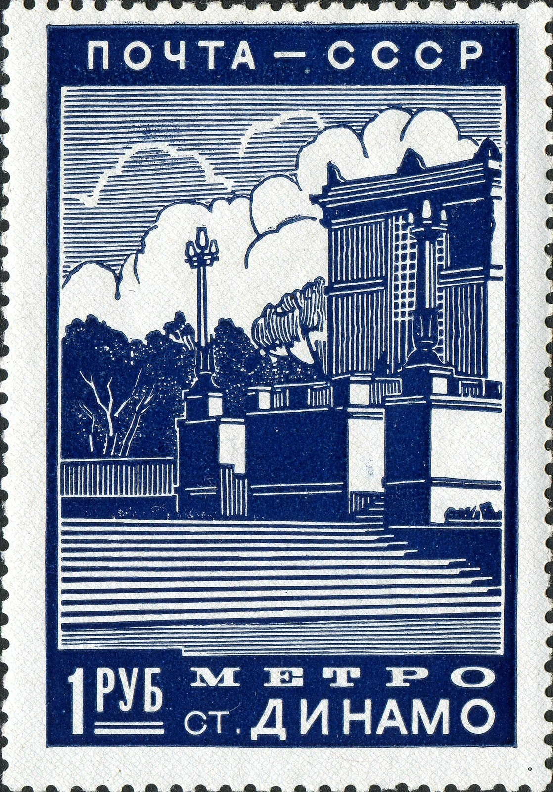
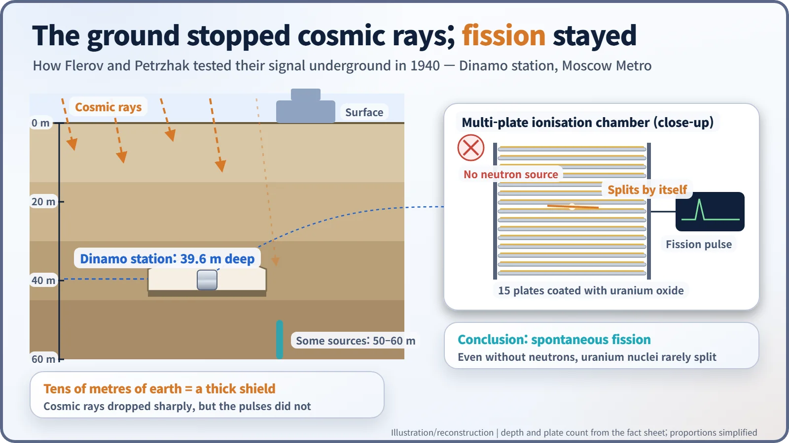
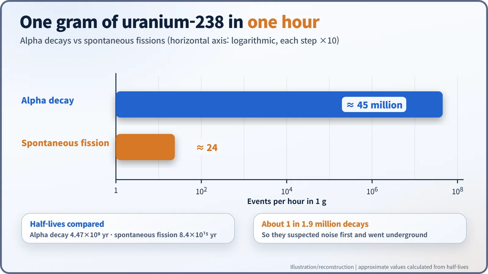
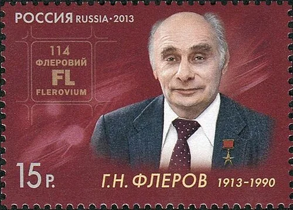

Nuclear History · 071
A Click After the Last Train — Flerov and Petrzhak Discover Spontaneous Fission (1940)
A counter that kept clicking with no neutron source, and a night shift under Moscow, revealed that uranium can split all on its own.
In 1940 two young Soviet physicists, Georgy Flerov and Konstantin Petrzhak, found that uranium nuclei occasionally split in two with no neutron to trigger them. To rule out cosmic rays they repeated the measurement at night, deep under Moscow in Dinamo metro station. Their short letter in Physical Review drew little response in the West, just as the Soviet Academy of Sciences set up its first uranium commission.
Waiting on an empty platform
Spring 1940, Dinamo station on the Moscow Metro. After the last train of the night had gone and the platform had emptied, two young physicists set out a detector and a counter and settled in to wait. They were not waiting for a train. They were waiting for a signal that might come only a few times an hour. If it kept coming even here, tens of metres underground, it could not be noise. It would be new physics. [5]

Fission news reaches Leningrad
When word spread in early 1939 that uranium nuclei could split in two, Soviet physicists moved quickly, and the centre of the action was Leningrad. At the Physico-Technical Institute, Igor Kurchatov (1903–1960) ran the nuclear physics laboratory. The Radium Institute was headed by the radiochemist Vitaly Khlopin (1890–1950). [3]
Across town, at the Institute of Chemical Physics, two theorists, Yakov Zeldovich (1914–1987) and Yulii Khariton (1904–1996), published a series of papers in 1939–1940 that worked out, for the first time in the USSR, the conditions a uranium chain reaction would need. Their conclusion, in short: simply piling up natural uranium would not keep a chain reaction going. You would need uranium enriched in uranium-235, or a very good moderator such as heavy water. [2]
The neutrons were gone, so why did the counter click?
Kurchatov handed an experiment to his student Georgy Flerov (1913–1990) and to Konstantin Petrzhak (1907–1998) of the Radium Institute. They built an ionisation chamber from 15 plates thinly coated with uranium oxide. More plates meant more uranium, and more chance of catching a rare event. The chamber counted the large electrical pulses that fission fragments leave behind as they tear through the gas. [6]
Then something odd happened. Even with the neutron source taken away, the chamber occasionally recorded big pulses that looked exactly like fission. A faulty instrument? They built three chambers to check, and the pulses refused to go away.
The prime suspect was cosmic rays, the high-energy particles that rain down from space and can fake a signal. So the pair decided to use the Earth itself as a shield. Dinamo, opened in 1938, is a deep-level station 39.6 m below ground. Some accounts put the measuring spot at about 50 m or even 60 m, so the exact depth varies between sources. Working at night, when no trains ran, they found that the cosmic-ray background dropped sharply but the pulses did not. By around May 1940 they were confident: uranium nuclei were splitting all on their own, with nothing to set them off. According to a story often told, Kurchatov, who had guided the work, declined to put his own name on the paper. [5] [6]

What it means for a nucleus to split "by itself"
Spontaneous fission is a heavy nucleus breaking in two without any outside help. It is also extremely rare. Using today's values, a single gram of uranium-238 undergoes about 45 million alpha decays in an hour, but only about 24 spontaneous fissions. That is roughly one fission for every 1.9 million decays. In terms of half-lives, alpha decay takes about 4.5 billion years, spontaneous fission about 8.4 × 1015 years. With odds like that, suspecting background noise first was simply good practice. [7]

You will sometimes read that they discovered "spontaneous fission of uranium-235". In fact they were looking at natural uranium, which is overwhelmingly uranium-238.
A short letter, and a long silence
The two men reported their result as a short letter, "Spontaneous Fission of Uranium", in the American journal Physical Review (volume 58, page 89, 1 July 1940). Yet in the United States the news drew little visible response. By then, American and British scientists had begun voluntarily holding back papers on fission. [1] [8]

Later, serving as a lieutenant in the Soviet Air Force, Flerov came to find that silence suspicious. In April 1942 he wrote to Stalin, pointing out that fission had vanished from Western journals. The Soviet bomb project that followed is a story for another day. [4]
A commission, and then the war
In summer 1940 the USSR Academy of Sciences set up a Commission on the Uranium Problem. Khlopin chaired it, with the geochemist Vladimir Vernadsky and the physicist Abram Ioffe as deputies; Kurchatov and Khariton were members. The founding date is usually given as 30 July 1940, but some sources say August, so it still needs checking. On 24 August Ioffe sent the Academy a memo naming Kurchatov and his colleagues Flerov and Petrzhak, together with Zeldovich and Khariton, as the key experts, and suggesting that Kurchatov lead the whole effort. [3]
That autumn, though, the judgement was cautious: too little was known to ask the government for major funding. Then, on 22 June 1941, Germany invaded the Soviet Union. The uranium work all but stopped, and Kurchatov moved to defending warships against magnetic mines. [4]
Soviet-era accounts tend to present this period as proof of the Kurchatov school's foresight, while Western histories describe a small start with limited results. Either way, the first evidence that a nucleus can split on its own came from beneath Moscow in 1940. Those "self-made" neutrons would return a few years later as a serious problem for plutonium bomb design. [8]